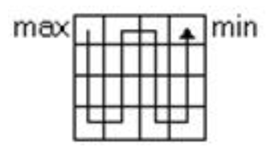

При выполнении задания необходимо написать 3 функции:
- Функция getRandomInt(min, max), которая принимает параметры min и max и возвращает случайное целое число между min (включительно) и max (не включая max)
- Функция getArray(n), которая принимает размерность n и возвращает массив со сгенерированными значениями через функцию getRandomInt
- Функция getResultArray(a), которая принимать исходный массив a и возвращать отсортированный массив
Даны числа a1..a(n*n), получить квадратную матрицу порядка n, элементами которой являются числа a1..a(n*n), расположенные в ней по схеме:
